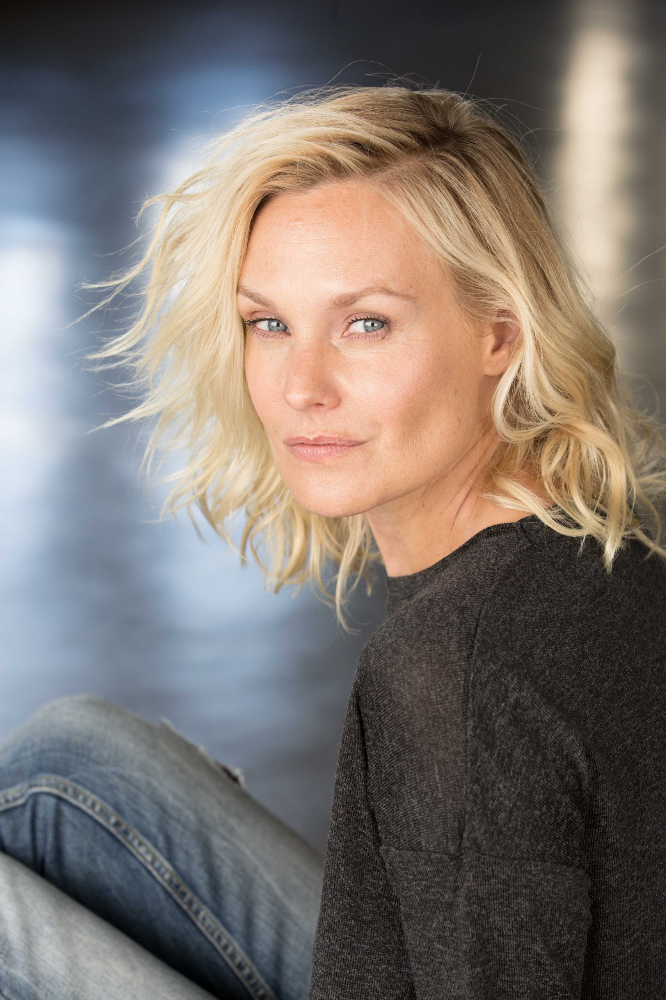

Laura Allen

Laura is sitting down with her looking back at the camera.
A bit about Laura Allen's Life
Laura was born on March 21, 1974, in Portland, Oregon. She became an actress and was known for being in these movies and shows.
The ABC Daytime soap opera, All My Children (2000–2002), The 4400 (2004–2005, 2007), Dirt (2007 to 2008), Terriers (2010), and Awake (2012).
Click here for more information on this actress.